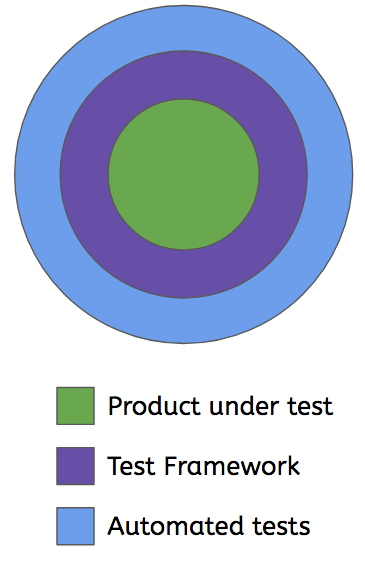
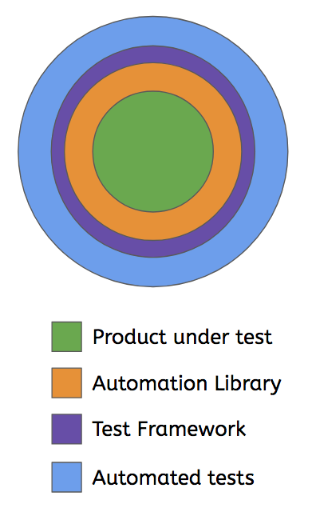

name: inverse layout: true class: center, middle, inverse --- #Why build an automation library? ... ## Praveen G Shirali ### Bangalore Python Meetup (BangPypers) - 16th March 2019 --- ## Does your test architecture look like this? ... --- layout: false # High level test architecture .left-half[ </img> ] .right-half[ **Test Framework:** * Provides libraries, plugins etc for interaction * Holds product-specific test helpers & fixtures * Interacts directly with the product * Entrypoint to execute tests **Tests:** * Written in framework specifc language/format (Raw code, Gherkin, DSL etc.) * Utilise test helpers & fixtures from the framework * Test data, parametrization resides close to the test. Performed based on what the framework provides. * Property-based data generation, contract pre & post conditions (Hoare triple), invariance checks etc are tied to the framework/ done close to the test. ] --- # Some traits: .left-half[ </img> ] .right-half[ * Heavy dependency on the features that the framework provides * Hard to reuse helper & fixture code outside of the framework (tightly coupled with the framework's format) * Hard to reuse code for non-test purposes. Everything is a test. ] --- template: inverse ## Can we do more with existing code ..? # Yes --- template: inverse ## How?? # Automation Library --- template: inverse ## automation library Provides API to automate your product. Testing _could_ be the primary purpose. May be more! <h1>≠</h1> ## (test) automation framework Provides a way to execute tests. Framework & tests may leverage the automation library's API. --- # Design * Modular. S.O.L.I.D principles. * Encapsulate other libraries and tools. Provides a Facade API. * Have its on unittests * Versioned release cycle that matches product changes & releases. * API docs (may be sphinx) -- _Your team needs it. You can't use what you don't know._ * Good extensions: Also, expose API at each layer: Example: - General core library - extended to become Product aware - extended further to become test aware --- # Example: Extending HTTP Client 1. Core HTTP client: Wraps some existing lib (like `requests`). Provides a _facade_. 2. Product-aware HTTP client: wraps _Core_: - Knows the product's auth mechanism - Knows different user roles for RBAC - Aware of typical content type, common payload structure, pagination patterns etc - Aware of routes & payloads. Can generate dummy data for an endpoint. - Aware of query args. Can restructure responses to match query combination. - Endpoint Object Model 3. Test-aware HTTP client: wraps _Product-aware_: - Aware of validation rules. Can identify invalid payloads. - Checks invariants automatically on each call. It is possible that there may be multiple Core HTTP clients which implement the same interface/contract (abstract base class) but provide different functionality. ``` lib.unittest.core.HTTPClient -- A Binder(HTTPServer, HTTPClient) could bind a client to a server for integration tests. lib.functest.core.HTTPClient -- wraps `requests` or similar lib and does an actual HTTP request to a blackbox server ``` --- # Utility playground 1. Create a namespace with instances of all library _features_ 2. Create CLI utility with `code.InteractiveConsole` with `locals=<namespace>` ```python ----------------------------------- E-Commerce Platform Test Playground ----------------------------------- >>> ecp.http.conn("localhost", 5000) # ecp.http=lib.functest.core.HTTPClient >>> ecp.http.GET("/users") # does GET /users from core client << ecp.response.HTTPResponse >> >>> ecp.endpoint.Users.get_users() # get_users() does GET /users << ecp.response.HTTPResponse >> >>> ecp.payload.USER.example(name="John Doe") { "id": <id>, "name": "John Doe", "email": <random_email> ... ... } # user payload with test data ``` --- # New high level test architecture .left-half[ </img> ] .right-half[ **Automation Library:** * Implements the bulk of automation code. Test framework and tests call into it. * Interacts with the product directly. **Test Framework:** * Light weight fixtures. They just call the library. **Tests:** * Indirectly utilize helpers from the library. * Parametrization, test data generation capabilities provided by the lib. But called close the test. * Library provides _test_ API which takes care of invariants, hypotheses etc. * Fewer tests are affected if ReST API payload changes. ] --- # Do we really need one? ### > Good for large teams. Large products. Gets better at scale. ### > Team concensus is important (primary consumers) ### > Extra engineering effort worth the ROI? --- # Benefits [1/4] ## Interactive Exploratory testing (QA) 1. Try things out interactively. Richer the library, easier it gets. 2. The API you explore with is the API you use in the test. 3. Share your recipie with your team. Stay in sync easily. (_steps_) ## Fast turn-around-time (think Sev.1 in-field issues) 1. Write a recipie to try to repro issues in just a few minutes. 2. Standalone scripts only require the library. Deploy at scale if required. 3. Fast turn-around-time: `repro -> fix -> verify` 4. Add as a test to the regression suite. --- # Benefits [2/4] ## Automated deployment & Configuration 1. Use the API to deploy and configure the product with custom data 2. Easily mimic customer-scale deployments. Execute at scale. 3. Setup databases. Import/Export data. ETL. 4. Generate, migrate, merge configurations. Handle test certs etc. 5. Environments (Local/Cloud): Physical, Container, VM etc. ## Aids specialised testing 1. Automate for stress, load, persistent load etc. 2. Performance engineering: profiling, resource usage patterns etc 3. Long-running tests for hard-to-repro issues --- # Benefits [3/4] ## Immunity + Decoration + Separation of Concerns 1. Influence behaviour across multiple tests in one go (in the lib code) 2. Ability to add things to the lib which automatically enhance all tests: - Contracts (Hoare logic) / pre-conditions & post-conditions - Add additional debugging at any layer - Drop-in to interactive mode or `pdb` - Better assertion helpers 3. Code may be usable in both unit/integration tests as well as functional tests. 4. Cherry-pick implementations. Rewire to fit your need. (via Dependency Injection) --- # Benefits [4/4] (assuming you are past the learning curve) ## Save engineering time + Improve quality 1. Easy to get started on a variety of tasks using automation. 2. Less time spent on these tasks. Productivity boost. 3. Less time on tasks = more time to explore other things. 4. Less prone to manual errors. 5. GTD. Motivating. Fun! --- # Open for Q&A Feel free to reach out with any questions or feedback. Thanks. ## Praveen G Shirali - praveengshirali@gmail.com - `pshirali` on BangPypers Slack - https://linkedin.com/in/praveenshirali - https://github.com/pshirali ## Link to this talk - https://pshirali.github.io/why_build_autolib